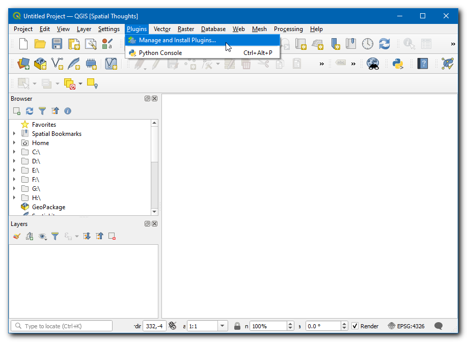
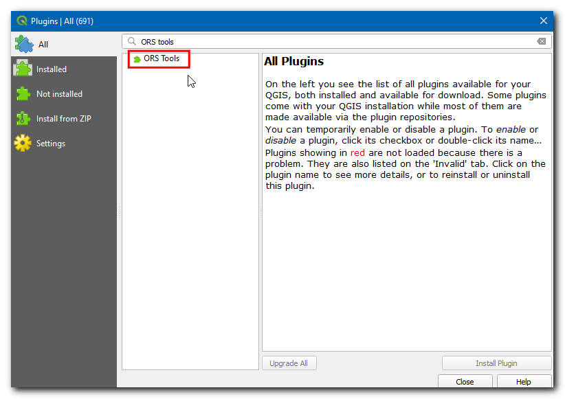
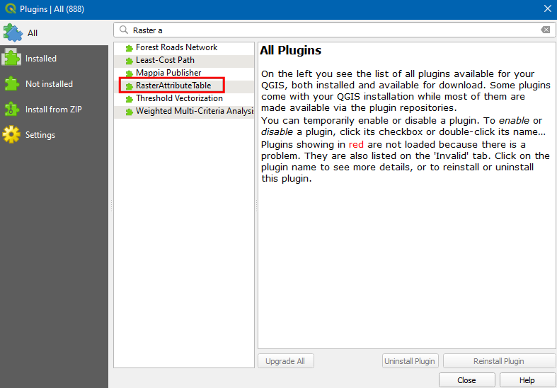
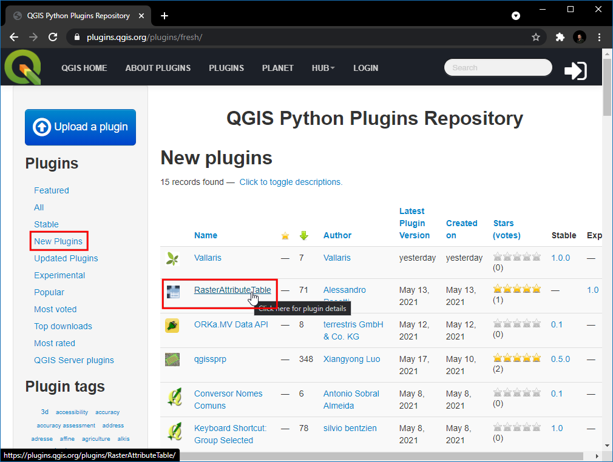
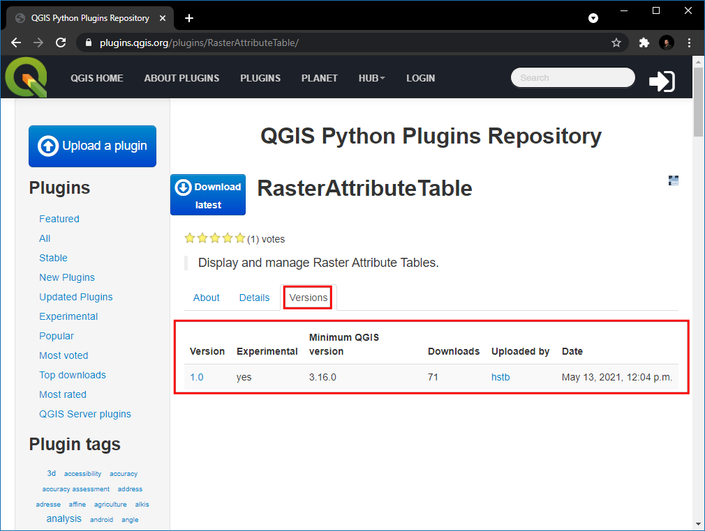

Ujaval Gandhi
Ujaval GandhiUporaba vtičnikov (QGIS3)¶
Vtičniki v QGIS dodajo programski opremi uporabne funkcije. Vtičnike pišejo razvijalci QGIS in drugi neodvisni razvijalci, ki želijo razširiti osnovno funkcionalnost programske opreme. Ti vtičniki so nato naloženi v skladišče vtičnikov QGIS, kjer jih pregledajo člani skupnosti, nato pa so na voljo vsem uporabnikom QGIS.
Pregled naloge¶
V tem vodniku boste izvedeli, kako omogočiti Core Plugins ter prenesti in namestiti Third-party Plugins. Naučili se boste tudi, kako poiskati in zagnati vtičnike, ko so nameščeni.
Postopek¶
Osnovni (Core) vtičniki¶
Osnovni (Core) vtičniki so že del standardne namestitve QGIS. Če jih želite uporabljati, jih morate le omogočiti.
Odprite QGIS. Kliknite , da odprete pogovorno okno Plugins.

Tudi če QGIS uporabljate prvič, boste v zavihku Installed videli veliko vtičnikov. To je zato, ker so to osnovni vtičniki (Core) in so bili nameščeni med namestitvijo QGIS.

Omogočimo enega od vtičnikov. Označite potrditveno polje poleg Topology Checker Plugin. S tem boste omogočili vtičnik in lahko ga boste uporabljali. Opozoriti je treba, da lahko vtičniki vstavljajo menijske elemente na različna mesta ter ustvarjajo nove plošče in orodne vrstice. Včasih je težko vedeti, kako najti novo omogočena orodja. Eden od namigov je, da pogledate v opis vtičnika. Tu je v opisu navedeno Category: Vector. To pomeni, da bi vtičnik po omogočitvi našli v meniju Vector (vektor). Poleg tega teh vtičnikov ni mogoče odstraniti. Kliknite Close.

Opomba
Številni osnovni (Core) vtičniki privzeto niso omogočeni. Vtičniki se naložijo ob zagonu QGIS, zato lahko omogočanje številnih vtičnikov podaljša čas zagona. Za boljšo izkušnjo onemogočite vse vtičnike, ki jih ne potrebujete.
Zdaj, ko je vtičnik Topology Checker Plugin omogočen, lahko za uporabo funkcionalnosti, ki jih je dodal vtičnik, preidete na .

Vtičniki Third-party¶
Vtičniki Third-party so na voljo v skladišču vtičnikov QGIS <https://plugins.qgis.org/>`_ in jih morajo uporabniki pred uporabo namestiti. Te vtičnike lahko na splošno razvrstimo v naslednje podskupine.
Vtičniki grafičnega vmesnika
Vtičniki za obdelavo (Processing)
Eksperimentalni (Experimental) vtičniki
Zdaj se bomo naučili, kako namestiti vtičnike iz vsake od teh kategorij.
Vtičniki grafičnega vmesnika¶
Ti vtičniki se namestijo v enega od menujev ali orodnih vrstic. Zdaj bomo namestili vtičnik z imenom QuickWKT, ki uporabnikom omogoča kopiranje/vlaganje geometrijskih nizov WKT in njihovo vizualizacijo.
Odprite QGIS. Kliknite , da odprete pogovorno okno Plugins.
Kliknite na zavihek All. Tu boste videli seznam vtičnikov.

V tem učbeniku poiščimo in namestimo vtičnik z imenom QuickWKT. Ko boste v polje search začeli vnašati qui, boste videli spodnje rezultate iskanja. Kliknite na QuickWKT.

Zdaj bodo prikazane informacije o vtičniku, ta vtičnik je pregledovalnik WKT. Kliknite
wktv Tags, s čimer boste pridobili vse vtičnike pod to oznako.
Zdaj kliknite Install Plugin v pogovornem oknu QGIS Plugins. Zdaj bo v vrstici QGIS info prikazano sporočilo
Plugin installed successfully.
Če ste opazili, v opisu ni bila omenjena kategorija vtičnikov. Zato je težko določiti, kako dostopati do novo nameščenega vtičnika. Večina vtičnikov je nameščena v meniju Plugins v QGIS. Kliknite na in videli boste novo nameščeni vtičnik. Vtičnik doda tudi gumb v orodno vrstico Plugins. Ta gumb lahko uporabite tudi za dostop do vtičnika.

Vtičniki za obdelavo (Processing)¶
Ti vtičniki bodo dodali nove algoritme (tj. orodja) v Processing toolbox QGIS. To je najprimernejši način za izdelavo vtičnikov, ki dodajajo nove funkcionalnosti prostorske analize. Namesto samostojnega orodja se lahko algoritem iz zbirke orodij za obdelavo uporablja kot del gradnika modela ali v načinu paketne obdelave za avtomatizacijo delovnih postopkov GIS. Zdaj bomo namestili vtičnik za obdelavo.
Odprite QGIS. Kliknite , da odprete pogovorno okno Plugins.

Kliknite na zavihek All in poiščite ORS tools.
Kliknite na vtičnik in kliknite Install Plugin v pogovornem oknu QGIS Plugins. Ob uspešni namestitvi se bo v vrstici QGIS info prikazalo sporočilo
Plugin installed successfully.
Vtičnik doda mapo z orodji v Process Toolbox. Pojdite na .

Obstaja veliko skupin orodij, tista, ki imajo poleg logotipa QGIS, se imenujejo Native algorithms. Na dnu boste opazili novo mapo z imenom ORS Tools. To je dodal vtičnik, ki smo ga pravkar namestili, in se imenuje Provider. Vtičniki za obdelavo QGIS lahko dodajo nove Providers - kot je ORS Tools -, ki lahko vsebujejo enega ali več novih algoritmov za obdelavo.

Razširite mapo z orodji ORS in si oglejte vsa razpoložljiva orodja v njej. Orodje lahko zaženete z dvojnim klikom na orodje.

Opomba
Vtičniki lahko dodajo nova orodja in nove elemente menija. Vtičnik ORS Tools doda tudi novo postavko menija za konfiguracijo v meniju .
Eksperimentalni (Experimental) vtičniki¶
Včasih iščete določen vtičnik, vendar ga ne najdete v zavihku All. Morda zato, ker je vtičnik označen kot Experimental. Tukaj je opisano, kako namestiti eksperimentalni vtičnik.
Odprite Plugins z . Kliknite na zavihek Settings. Videli boste možnost z imenom Show also experimental plugins. Kliknite potrditveno polje poleg nje, da jo omogočite.

Zdaj preklopite nazaj na zavihek All in poiščite vtičnik ‚RasterAttributeTable‘.
Kliknite na vtičnik in videli boste, da je označen kot eksperimentalni. Kliknite Install Experimental Plugin in zaprite pogovorno okno Plugins.

Opomba
Previdno uporabljajte eksperimentalne vtičnike. Eksperimentalni vtičnik morda ni dobro preizkušen ali se hitro razvija.
Vtičnik lahko uporabite tako, da iz .

Raziskovanje repozitorija vtičnikov QGIS¶
QGIS ima bogat ekosistem vtičnikov tretjih oseb. Uradni repozitorij vtičnikov QGIS vsebuje več kot 1000 vtičnikov. Po njem lahko brskate in odkrivate nove vtičnike, ki bi vas lahko zanimali. Zdaj bomo raziskali skladišče vtičnikov.
Pojdite na QGIS Plugins Repository in kliknite PLUGINS.

Na tej strani so navedeni vsi razpoložljivi vtičniki. S klikom na naslove lahko vtičnike razvrstite po različnih lastnostih.

Obstajajo tudi različni razdelki, kot so Featured, Popular itd., ki omogočajo odkrivanje zanimivih vtičnikov. Kliknite na New Plugins, s čimer boste pridobili vse najnovejše vtičnike. Izberete lahko katerikoli vtičnik po lastni izbiri. V tem priročniku bomo izbrali RasterAttributeTabel.
Preklopite na Versions, kjer so navedeni zgodovina izdaj in razpoložljive različice. Številni vtičniki so združljivi samo z določenimi različicami QGIS. V Minimum QGIS version je navedena zahtevana različica QGIS za vtičnik.

Ko najdete vtičnik, lahko odprete QGIS in ga namestite iz Plugin Manager, kot je prikazano v prejšnjih razdelkih.
If you want to give feedback or share your experience with this tutorial, please comment below. (requires GitHub account)